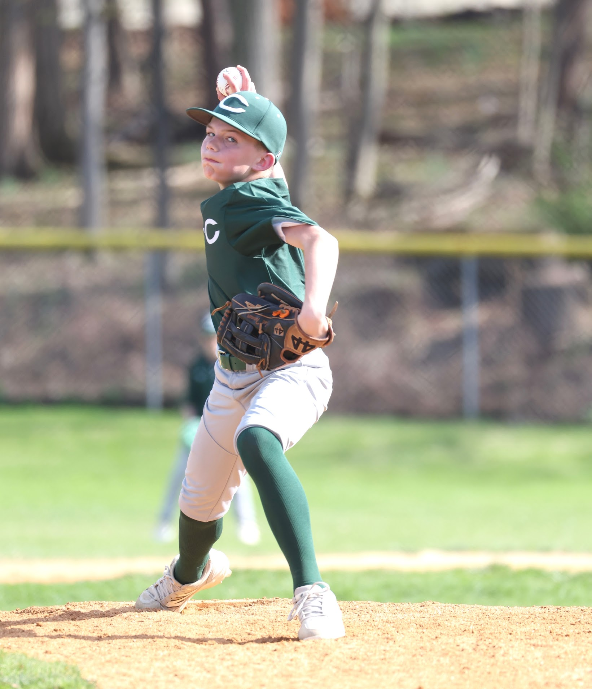
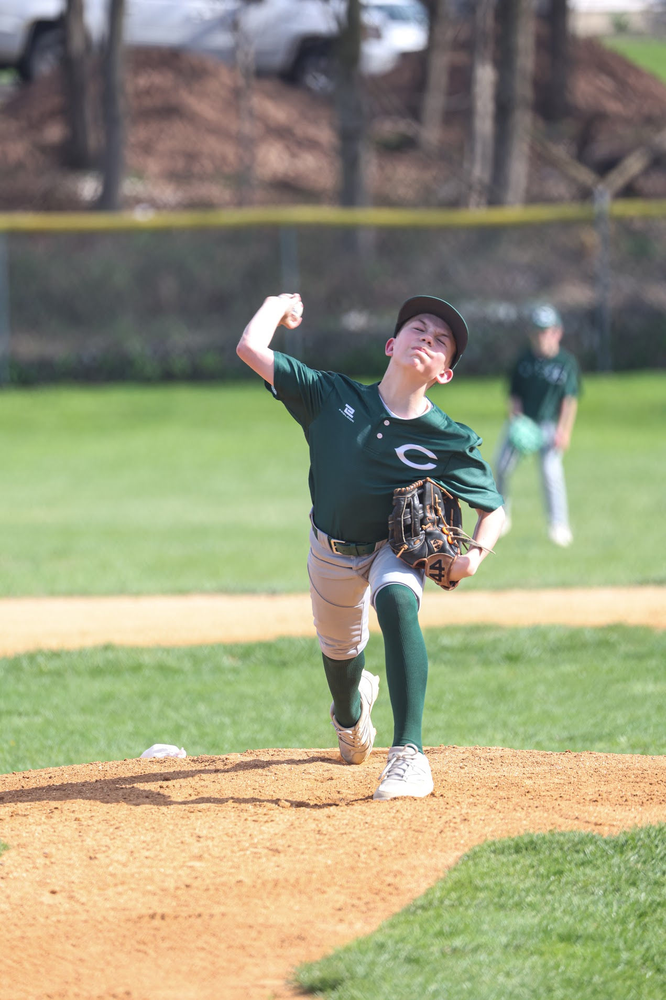
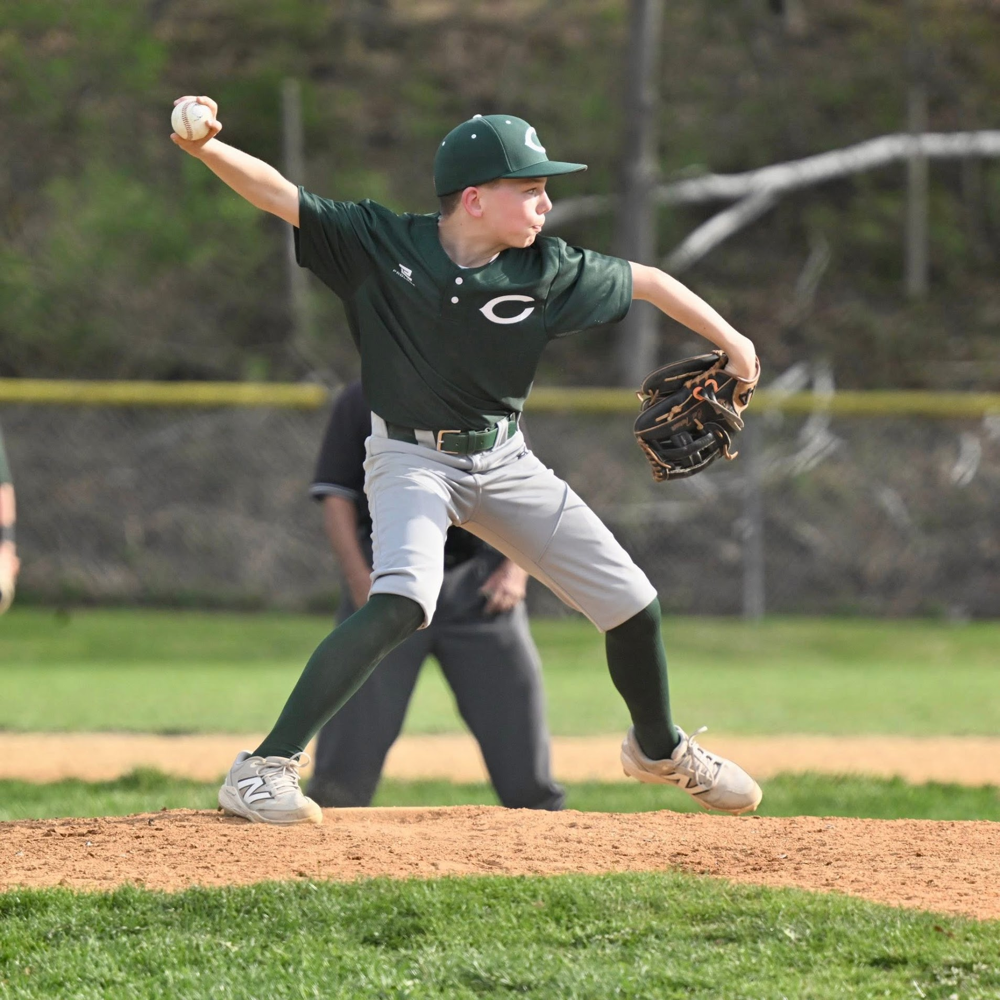
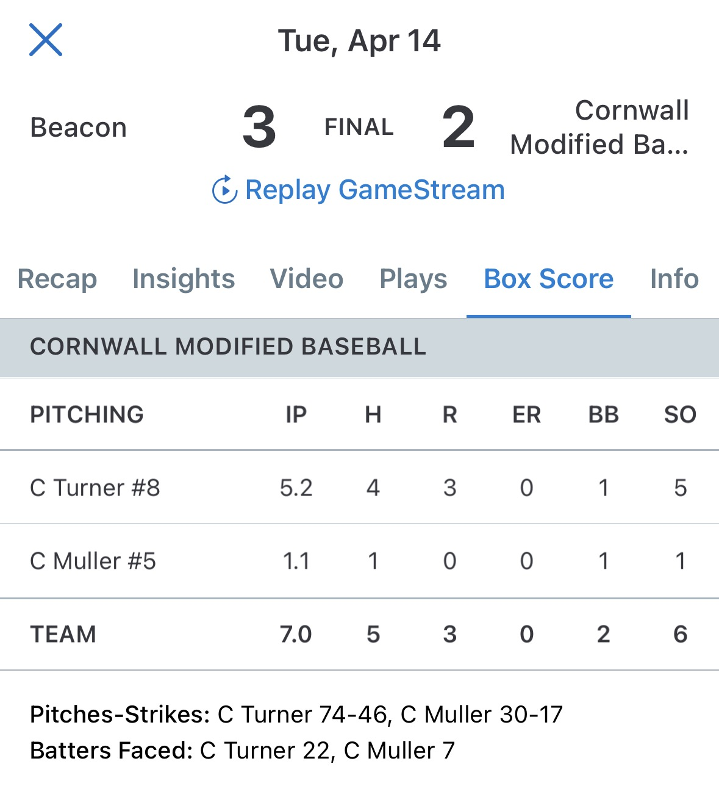
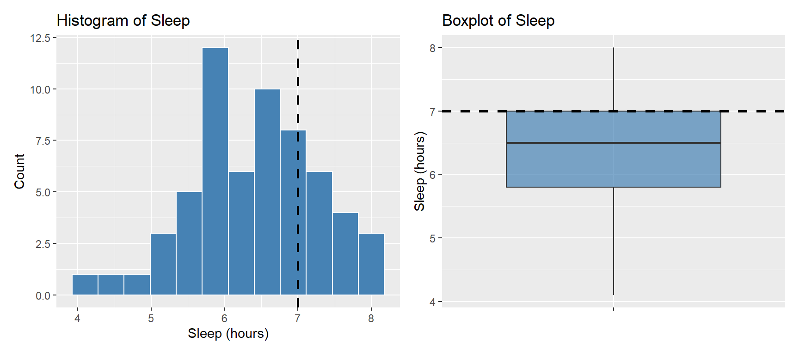
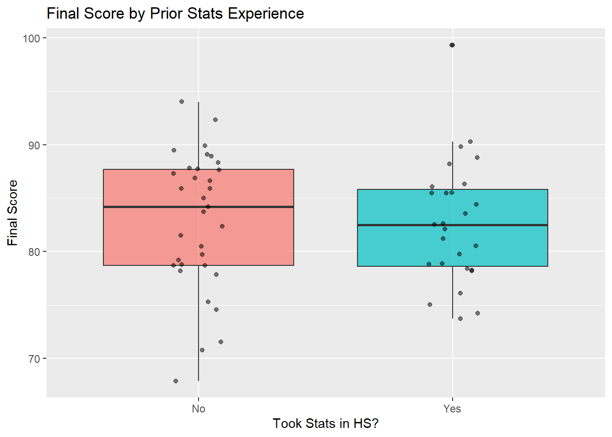
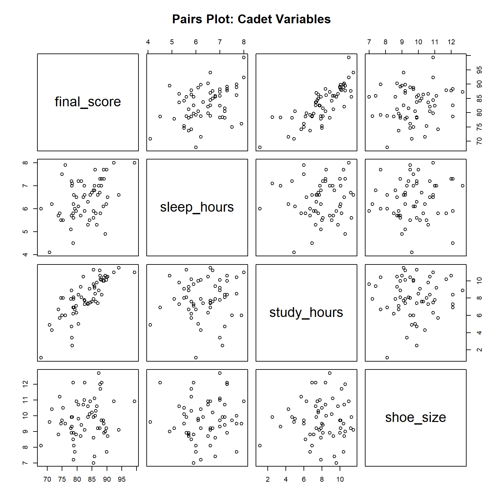
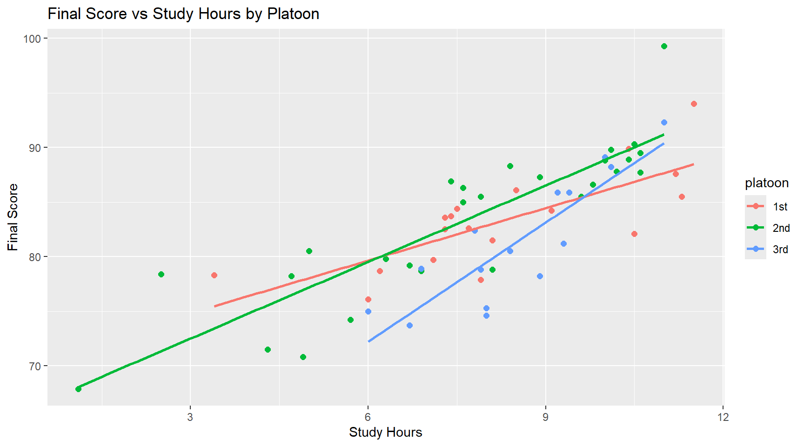
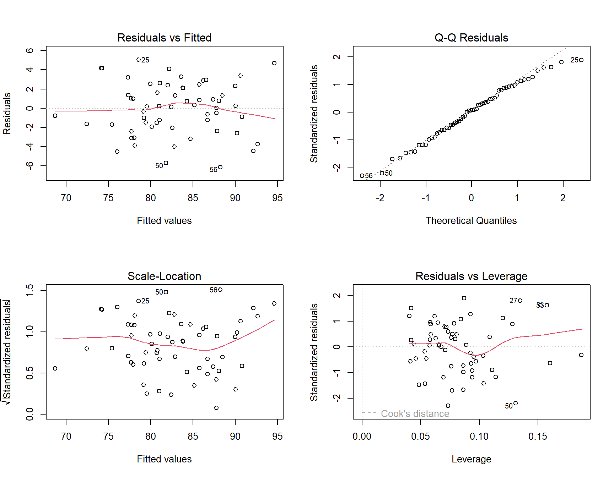

# A tibble: 6 × 6
sleep_hours study_hours prior_stats platoon shoe_size final_score
<dbl> <dbl> <chr> <chr> <dbl> <dbl>
1 5.8 5.7 Yes 2nd 11.2 74.2
2 4.5 6.9 No 2nd 12.1 78.7
3 5.7 6.7 Yes 3rd 8.8 73.7
4 5.5 8 No 3rd 9.5 74.6
5 5.5 9.1 No 1st 10.1 84.2
6 4.1 4.9 No 2nd 9.6 70.8Lesson 33: Project Work Day – Inference and Regression in Vantage

What We Did: Lessons 28, 30, 31, 32
NoteLesson 28: Simple Linear Regression I
- Least squares fits \(\hat{y} = b_0 + b_1 x\) by minimizing \(\sum(y_i - \hat{y}_i)^2\)
- Slope \(b_1\): predicted change in \(y\) for a 1-unit increase in \(x\)
- Residuals: \(e_i = y_i - \hat{y}_i\)
NoteLesson 30: Simple Linear Regression II
- Test the slope with \(t = b_1 / SE(b_1)\)
- \(R^2\) measures the fraction of variability in \(y\) explained
- Categorical predictors use indicator variables with a reference level
NoteLesson 31: Multiple Linear Regression I
- Interpret each slope holding other variables constant
- LINE assumptions: Linearity, Independence, Normality, Equal variance
- Check with residuals vs. fitted, QQ plot, and scale-location plots
NoteLesson 32: Multiple Linear Regression II
- Applied MLR to project datasets in Vantage
- Variable selection and assumption checking
What We’re Doing: Lesson 33
Objectives
Today is a walk-through work day. I’ll create a (pretend) cadet performance dataset and use it to run:
- A one-sample t-test
- A two-sample t-test
- A multiple linear regression with a categorical predictor – and iterate to drop an insignificant term
For each section we follow the same rhythm: visualize → test → check assumptions → takeaway.
Required Reading
No new reading. Bring your project open – we’ll work in Vantage in parallel.
Break!
Cal




The Research Question
ImportantOverarching Question
What cadet habits and backgrounds drive MA206 final exam performance?
One test can’t answer that on its own. We’ll work through it in three passes – each pass narrows in on a different piece of the puzzle, and together they give us the full picture:
- Are cadets hitting the sleep standard that supports performance? – one-sample t-test against the Corps guidance of 7 hours.
- Does prior stats coursework give cadets a leg up? – two-sample t-test comparing final score between cadets who took stats in high school and those who didn’t.
- Once we control for everything at once, which factors actually move the score? – multiple linear regression.
Same dataset the whole way through, so the three answers stack into one story.
The Setup
Imagine we pulled records on 60 cadets from a single company. For each cadet we have:
sleep_hours– average nightly sleep last weekstudy_hours– weekly hours studying for MA206prior_stats– took a stats course in high school (Yes / No)platoon– 1st, 2nd, or 3rdshoe_size– because someone on the S3 staff thought it matteredfinal_score– final exam score (0-100)
Part 1: One-Sample t-Test – Are Cadets Sleeping Enough?
Sub-question 1. Sleep is an input to performance. Before we model final score, ask: are our cadets even hitting the Corps guidance of 7 hours per night?
- \(H_0: \mu_{\text{sleep}} = 7\)
- \(H_A: \mu_{\text{sleep}} > 7\)
Visualize

Test
One Sample t-test
data: cadets$sleep_hours
t = -5.4245, df = 59, p-value = 1
alternative hypothesis: true mean is greater than 7
95 percent confidence interval:
6.206442 Inf
sample estimates:
mean of x
6.393333 Validity Conditions
With \(n = 60 > 30\), the CLT guarantees the sampling distribution of the mean is approximately normal. ✓
Takeaway
The p-value is well above \(\alpha = 0.05\), so we fail to reject \(H_0\). We have no evidence that average cadet sleep exceeds 7 hours. The sample mean is well below the standard – cadets are not getting enough sleep, and that’s a problem for performance.
Part 2: Two-Sample t-Test – Does Prior Stats Experience Matter?
Sub-question 2. Does taking a stats course in high school give cadets a leg up on the MA206 final?
- \(H_0: \mu_{\text{Yes}} - \mu_{\text{No}} = 0\)
- \(H_A: \mu_{\text{Yes}} - \mu_{\text{No}} \ne 0\)
Visualize

Test
Welch Two Sample t-test
data: final_score by prior_stats
t = 0.12235, df = 57.433, p-value = 0.903
alternative hypothesis: true difference in means between group No and group Yes is not equal to 0
95 percent confidence interval:
-2.953823 3.338334
sample estimates:
mean in group No mean in group Yes
82.91818 82.72593 Validity Conditions
Each group has well over 30 observations (or close to it – check with table(cadets$prior_stats)), and Welch’s t-test handles unequal variances. ✓
No Yes
33 27 Takeaway
The p-value is large and the confidence interval for the difference in means contains 0. We fail to reject \(H_0\). There is no evidence that prior stats exposure changes final score – good news if you’re new to stats.
Part 3: Multiple Linear Regression – What Actually Predicts Final Score?
Sub-question 3. Now the headline question. Holding everything else constant, which factors actually move final_score? Start with everything on the table:
\[ \text{final\_score} = \beta_0 + \beta_1 \text{sleep} + \beta_2 \text{study} + \beta_3 \text{platoon} + \beta_4 \text{shoe\_size} + \varepsilon \]
Visualize
First, a quick pairs plot of the numeric variables to eyeball which predictors actually track with final_score:

study_hours and sleep_hours show obvious positive trends with final_score; shoe_size looks like a random cloud – already a hint it won’t survive. Now add platoon to the picture:

Fit the Full Model
Call:
lm(formula = final_score ~ sleep_hours + study_hours + platoon +
shoe_size, data = cadets)
Residuals:
Min 1Q Median 3Q Max
-6.2085 -1.7278 0.2413 2.2293 4.9484
Coefficients:
Estimate Std. Error t value Pr(>|t|)
(Intercept) 49.88982 3.91271 12.751 < 2e-16 ***
sleep_hours 2.31535 0.43289 5.349 1.84e-06 ***
study_hours 2.14711 0.16766 12.806 < 2e-16 ***
platoon2nd 1.79142 0.87113 2.056 0.04459 *
platoon3rd -2.78083 0.98960 -2.810 0.00689 **
shoe_size 0.07703 0.29562 0.261 0.79542
---
Signif. codes: 0 '***' 0.001 '**' 0.01 '*' 0.05 '.' 0.1 ' ' 1
Residual standard error: 2.813 on 54 degrees of freedom
Multiple R-squared: 0.8034, Adjusted R-squared: 0.7852
F-statistic: 44.13 on 5 and 54 DF, p-value: < 2.2e-16Look at the p-values. shoe_size is nowhere near significant – no surprise, there is no physical reason foot length should drive a math score. Everything else earns its keep.
Iterate: Drop shoe_size
Call:
lm(formula = final_score ~ sleep_hours + study_hours + platoon,
data = cadets)
Residuals:
Min 1Q Median 3Q Max
-6.1372 -1.7591 0.1887 2.1759 5.0354
Coefficients:
Estimate Std. Error t value Pr(>|t|)
(Intercept) 50.5389 2.9916 16.894 < 2e-16 ***
sleep_hours 2.3258 0.4274 5.442 1.26e-06 ***
study_hours 2.1505 0.1657 12.977 < 2e-16 ***
platoon2nd 1.8207 0.8565 2.126 0.03803 *
platoon3rd -2.8032 0.9775 -2.868 0.00585 **
---
Signif. codes: 0 '***' 0.001 '**' 0.01 '*' 0.05 '.' 0.1 ' ' 1
Residual standard error: 2.789 on 55 degrees of freedom
Multiple R-squared: 0.8031, Adjusted R-squared: 0.7888
F-statistic: 56.1 on 4 and 55 DF, p-value: < 2.2e-16Notice that the remaining coefficients barely moved, and the adjusted \(R^2\) ticked up a hair because we stopped paying the penalty for a useless predictor. This is the model we’ll keep.
Validity Conditions (LINE)

- Linearity – residuals vs fitted is a flat cloud. ✓
- Independence – by how the cadets were sampled. ✓
- Normality – QQ plot hugs the line. ✓
- Equal variance – scale-location is roughly flat. ✓
Takeaway
After one iteration we land on a clean model: sleep hours, study hours, and platoon all help explain final score, and each hour of study adds roughly \(\hat{\beta}_{\text{study}}\) points holding the others constant. shoe_size was noise and we correctly removed it. Assumptions check out, so we trust the p-values and confidence intervals the model reports.
Back to the Big Question
What cadet habits and backgrounds drive MA206 final exam performance?
Stitching the three answers together:
- No evidence cadets sleep more than the 7-hour standard (Part 1) – the sample mean falls well short, so an input we know matters is under-supplied.
- Prior high school stats coursework shows no evidence of changing final score (Part 2) – background doesn’t predetermine the outcome.
- Once we control for everything at once, sleep, study hours, and platoon are what actually move the score (Part 3).
Consistent story: the leverage for improving MA206 performance isn’t where cadets came from – it’s the habits they control now. Sleep and study time are the dials worth turning.
Off to Vantage
Now it’s your turn. Open your project workspace and run the same rhythm on your data: vis → test → conditions → takeaway.
ImportantProject Links
| Resource | Link |
|---|---|
| Project Instructions | Course Project Instructions |
| Project Groups / Pairs | Project Pairs |
| Presentation Template | MA206X West Point Template (.pptx) |
| Army Vantage | Vantage Workspace |
Before You Leave
Today
- Walked through one-sample t, two-sample t, and MLR on a synthetic cadet dataset
- Iterated the MLR by removing an insignificant predictor (
shoe_size) - Every test gets the same treatment: visualize, run it, check conditions, state the takeaway
Any questions?
Next Lesson
- Keep building your Tech Report
- Office hours available
Upcoming Graded Events
- Tech Report – Due Lesson 36